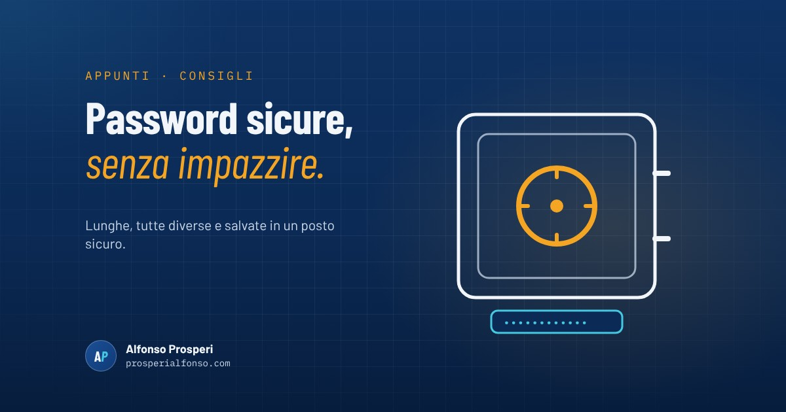

Ogni tanto una notizia ci ricorda quanto sono esposti i nostri dati: nel 2020 fu il furto dei dati di molti clienti di un operatore telefonico, poi tanti altri casi. Non possiamo impedire che un servizio venga attaccato, ma possiamo fare in modo che una password rubata non apra tutte le altre porte.
Come creare una password sicura
- Lunga prima che complicata. Almeno 12-16 caratteri. Una frase fatta di tre o quattro parole a caso, per esempio "lampada-treno-gelso-nuvola", è più sicura e più facile da ricordare di "P@ss1!".
- Diversa per ogni sito. È la regola più importante: se una password viene rubata da un sito, non deve funzionare anche sugli altri.
- Niente dati personali. Nomi, date di nascita, squadra del cuore o targa dell'auto sono i primi tentativi di chi prova a indovinare.
Dove salvarle: il gestore di password
Nessuno può ricordare decine di password diverse. Per questo esistono i gestori di password: le salvano in modo protetto, le inseriscono da soli sul sito giusto e ne creano di nuove molto robuste.
- Gestore delle password di Google, già integrato in Android e Chrome.
- App Password di Apple su iPhone, iPad e Mac.
- Bitwarden, gratuito e funziona su tutti i dispositivi.
Basta ricordare bene una sola password, quella del gestore o dell'account, e proteggerla con la verifica in due passaggi.
La verifica in due passaggi
Dopo la password, il servizio chiede una seconda conferma: un codice da un'app, una notifica sul telefono o un SMS. Così, anche se qualcuno scopre la password, senza il tuo telefono non entra. Attivala almeno su mail, banca, social e WhatsApp.
Il passo successivo: le passkey
Dove sono disponibili, le passkey sostituiscono la password con l'impronta, il volto o il PIN del telefono e non si possono rubare con le mail false. Ne parlo in questa guida.
Le tue password sono già state rubate?
Il sito Have I Been Pwned ti dice se la tua mail compare in furti di dati conosciuti. Anche il Gestore delle password di Google avvisa se una password salvata è stata esposta. Se succede, cambiala subito, e cambiala ovunque l'avevi riusata.